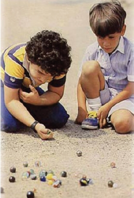

Çocukluğumuzda çalışan kadın sayısı azdı. Annelerimiz işe gitmez, evlerini yuva yapmaya çalışırken yorulurlar, ama asla yorgun olmazlardı. Hep oradaydılar, olmadı yan komşuda. Kaybetmeyelim diye boynumuzda asılı ev anahtarlarımız olur, ama kullanmak aklımıza bile gelmezdi.
Evler fazla katlı olmaz, çoğunlukla müstakil yapılardı. Ve her yer dolu değil, boş arsalarımız vardı. İşte bu arsalar içinde yabani otlar ya da meyve veren ağaçlar olurdu. Biz bu ağaçlara çıkar, meyvelerinden toplar, dallarından kendimize sapanlar yapardık. Birçoğumuz bu ağaçlardan düşerdik. Renkli yara bantlarını kanayan yerlerimize yapıştırır, bunları bir rütbeymiş gibi gururla taşırdık. Oyunlarımızın çoğu buralarda başlardı.
Evlerin girişinde asmalar olur, daha yeni olgunlaşmaya başlayan üzümlerden atardık ağzımıza. O ekşi yemişler ağzımızı kamaştırır, türlü şekillere giren yüzlerimize bakar bakar gülerdik. En sevdiğim şeyler asmanın ince ve kıvrımlı dallarıydı. Biraz kartlaşınca ince zarlarını soyar öyle yerdim. İncirler olmaya başladığında dalından koparırdık. Koparılan kısmın ucundan ince bir süt akardı. Yarısından bölüp birbirine sürtünce tadının daha güzelleştiğini sanırdık.
Her delikten bir kertenkele, toprak altından solucanlar çıkar, elimizde ufak değnekler, onları bir başka deliğe girmeden önce yakalamak üzere kovalardık. Dut ağaçlarından tırtıllar düşerdi üstümüze. Kelebek olacaklarını sanıp gözlemlerdik saatlerce. Sıkılırdık saatler geçip de değişiklik olmadığında bu hantal yaratıklardan.
Kelebekler konardı omuzlarımıza, uğurböcekleri saçımızda, başımızda durur, en sevimli halleriyle birinin kendilerini fark etmesini beklerlerdi. Elimize alıp maniler söylerdik onlara. Ne o kelebekler kaldı türlü renkli kanatlarıyla oradan oraya uçuşan, ne de uğurböcekleri. Leylekler yuva yapardı damlarımıza göç mevsimleri gelmeden önce. Sonra bırakıp bizi göçerlerdi yeni diyarlarına. Binalar yükselmeye başlayıp televizyon antenleri dolunca çatılara leyleklere yer kalmamıştı.
Semtimize kurulan pazarlar ya kendi sokağınızda olur veya bir iki sokak öteden başlardı. Pazarcılar kullanabilsin diye eski gazete yapraklarından kesekâğıdı yapardık. Unu sulandırmak sonucu elde edilen tutkalla yapıştırır pazar esnafına çok düşük bir fiyatla satardık. Uzun zaman sürmedi, seksen kuşağı evinde kesekâğıdı yapıp satan belki de son şanslı kuşaktı. Naylon poşetler henüz piyasada yoktu. Genelde filelerle taşınırdı sebzeler, meyveler. Yaz ayları geldiğinde, hazırladığımız buzları musluk suyu eşliğinde kullandığımız sürahilere doldurur, yanında sadece bir bardakla su satardık pazarcı amcalara. Hem suyu içerler hem de “aferin” diyerek severlerdi bizi parayı verirken. Hemen hepsi suyu bir dikişte bitirir, temizlemek için değil de bardağı öylesine çalkalardık. Su biter, sevinç içinde koşardık evlerimize yeniden doldurup satmak üzere.
Yaşlı teyzelere aldıkları malzemeleri taşımakta yardımcı olurdu bazılarımız. Onlar da bizi kırmazlar, ufak harçlıklar sokarlardı cebimize. O malzemeleri ne biz para için taşırdık aslında ne de onlar taşıdığımız için verirlerdi harçlıkları. Gizli bir anlaşma vardı sanki aramızda.
Bizim mahallenin kızları vardı. Herkes onları neredeyse kardeşi gibi görür, diğer mahalle delikanlılarından korumaya çalışırdık. Arada birimiz birine âşık olur, diğerlerimiz daha da sahiplenirdik bizim mahallenin kızını, bacımızı.
Genelde yaz aylarında olmak üzere, akşam ezanı okunup, babalar eve geldikten ve ailecek yemekler yendikten sonra, mahallenin gençleri birer birer aşağı inip, her sokakta rastlanılan bir apartman girişi, bir pasaj merdiveni ya da bunlara uygun yer yoksa bir elektrik direği altına toplanıp, gece yarılarına kadar sohbet edip şarkılar söylerlerdi. Gençler için en güzel eğlencelerden biri de buydu.
Sokağımızdan gelip geçenlere bakarken elimizdeki Japon Çekirdeklerini çitler, soranlara adres tarif ederdik. Nadir geçen arabalara bakar, onlar hakkında bilgi sahibi olanlarımız hava atardı diğerlerine. Ara sıra coşar gürültü yapar ya da şarkı falan söyleyip küfürlü konuşmaya başlarsak biri pencereden kafayı uzatıp uyarırdı bizi. Hemen kendimize çeki düzen verip, “dağılalım abi” derdi birimiz. Genellikle homurdanarak, (ama utanarak,) ertesi gün yine aynı şeyleri yaşamak üzere evlerimize dönerdik.
Sokaklar en büyük eğlence mekânımızdı. Sokakta oynamak diye bir kavram vardı. Oyunu bırakmamak için aç kaldığımız bile olurdu. Anneler bu durumu bildiklerinden, kardeşlerimizle ya da diğer arkadaşlarımızdan biriyle bizlere ekmek arası bir şeyler hazırlayıp gönderirlerdi. Mahallemizdeki teyzeler, annelerimiz gibiydi. Susayınca evlerine girer su içerdik ya da pencerelerinden sürahi ve bir bardak uzatırlar, hepimiz suyumuzu aynı bardaktan kana kana içerdik. (Elbette ki içtiğimiz musluk suyu.)
Evine sadece çişi gelenler gider (üşenenlerimiz boş bir arsaya işeyiverirdik,) ve elinde mutlaka yiyecek bir şeylerle dönerdi. Anneleri kendi çocuğuna ne verdiyse bizlere de aynısından gönderirdi. Bazen bir kurabiye, bazen bir meyve veya bir dilim ekmek üstüne sürülmüş Sana yağ...
Bir anda kendimizi yeniden sokakta bulur, ya kaldığımız yerden devam eder ya da yeni bir oyun kurardık. Oynadığımız oyunlar bizi mutlu ederken, bazen kararsız kalır, o geniş yelpaze içinden hangisini seçeceğimizi bilemezdik.
Çamurdan yaptığımız telsizlerle “breyk breyk” nidaları atarak konuşur, komando olduğumuzu hayal ederek bildiğimiz rütbelerden edinirdik. En sevdiğimiz rütbe ise “yüzbaşılık”tı. Bunun sebebi yüksek ihtimal Tommix’ti. Çünkü o bir yüzbaşıydı. Kovboyculuk en sevdiğimiz oyunlardandı.
En iyi ihtimalle hediye gelen plastik bir tabanca sahibine prim yaptırırken, diğerlerimiz sopalardan yapma tüfeklerle “dekman dekman” diye bağırarak ateş ederdik. Bolca seyrettiğimiz Amerikan filmlerinden öğrendiğimiz isimler takardık birbirimize. Teksas, Kolarado, Arizona veya Misisipili olur, Kızılderililerden neredeyse nefret ederdik. (Nerden bilirdik adamcağızların neler çektiklerini.) Kötü adam lazımsa bir kısmımız Kızılderili rolüne girer, Apaçi, Siyu, Çeroki ya da Mohikan kabilelerinden birine mensup olurduk. Hayali şişelerden Ateş Suyu içer, elimize geçen beyaz adamların kafa derisini temsili olarak yüzerken çılgınlar gibi de çığlık atardık. Kızlarsa yaralılara yardım eder, buldukları bez parçalarıyla onların yaralarını sararken bir yandan da teneke kutularda yemek pişirip, ellerine geçen çalı çırpıyla çadırları temizlerlerdi.
Havalar ısınıp, güneş yüzünü gösterdiğinde şenlenirdi sokaklar. Araba sayısı az olduğu için ne biz ne de ailemiz fazla korkmazdık sokaklardan. Boş arsalarımız, ileride üzerine bina dikileceğinden habersiz ev sahipliği yaparlardı oyunlarımıza. Misketlerimizle genelde burada oynar, çukur açar, Mors oynamak için üçgenler çizerdik.
Kış ayları gelip kar yağdığında bir kayak merkezi hüviyetine bürünürdü buralar. Zar zor aldığımız sokağa çıkma izinlerinden sonra kat kat çoraplar ayağımızda, sadece gözümüzün göründüğü başlıklar takardık. Evde gürül gürül yandığını bildiğimiz sobaya güvenirdik aslında. Bir de annelerimizin şefkatine.
Elimize geçirdiğimiz bir tahta parçası ya da bir meyve kasası, evden getirdiğimiz tepsiler kayak vazifesi görürdü. Düşüp kalkar, yine düşerdik. Evlere çağırıldığımızda üzülürdük eğlence yarım kaldı diye. Bıraksalar saatlerce oyuna devam edebilirdik, ama evimizin kapısına geldiğimizde yorgunluktan botlarımızı bile annelerimize çıkartırdık. O esnada “Hadi gidin, oynayın,” deseler yine giderdik.

Koşarız terleriz burnumuz akar, düşeriz ağlarız yine akar, üzülürüz gözlerimiz yaşarır, yine burnumuz akardı. Hatta burnumuzun ucunu kerme tutardı. Ceplerimizde çoğunlukla bez mendillerimiz olurdu, üstüne türküler yakılan, kenarları işlemeli, ama onları kullanmaya üşenirdik. Kolumuza silerdik burunlarımızı. Gömleğimizin, kazağımızın, gocuğumuzun daha doğrusu uzun kollu neyimiz varsa hepsinin uçları meşin gibi olurdu.
Tam oyuna dalmışken üst katların birinden bir sepet salınırdı aşağıya. Pencereden uzanan bir komşu seslenirdi bakkalı uyarmamız için. Hemen her apartmanın pencerelerinden sepetler salınmış dururdu öylece. Sanki oranın demirbaşıymış gibi. Tanımadığı çocuklara “Küçüüüük! Küçük,” diye bağırır, siparişlerini verirlerdi teyzeler. Ne kadar kızsak da bu duruma üşenmez, o siparişleri götürürdük evlerine.
Elimizde hareket halinde bir ip görenleri şaşırtırken, ucunda ayağından bağladığımız bir atsineğini vızıldaya vızıldaya dolaştırırdık. Büyükler uyarsa da “yazık hayvana, yapmayın çocuklar,” diye, pek kulak asmazdık. Çok neşeli gelirdi bunu yapmak. Sonradan bir hamamböceğini kurtarmak için kafamızı bile yarabileceğimizi nerden bilirdik.
“Hüseyin gel gel, karınca yuvası buldum.”, “Gol oldu oğlum,”, “Kempes yine attı gölünü sayın seyirciler,”, “Anne bana mısır al, para ver,”, “Hadi oğlum, kızım eve gelin üşüdünüz,” Ve bunlar gibi bir sürü sözler duyulurdu açık pencerelerin rüzgârdan sallanan perdelerinin arkasından.
Toplu konutların inşaatına başlandıktan sonra sokak aralarındaki boş arsaların da suyu ısınmıştı. Bir bir hepsi dolmaya başladı. Etrafımız şantiyeye dönmüş, önce boş yerler sonra da birkaç katlı küçük evler yerlerini yüksek katlı apartmanlara bırakıyordu.
İnşaatlar devam ederken çevrelerindeki topraklar suyla sürekli meşgul olunduğu için çamur olurdu. Biz de çamurdan kartopuna benzer toplar yapar ve bunları bir apartmanın yan duvarına, en yükseğe yapıştırmaya çalışırdık. Yani bir apartmanın yan duvarı, orada da bir inşaat olacak ve bu çamurlar oraya atılıp yapıştırılmayacak? İşte bu olacak işlerden değildi.
Sokaklarımızda toprak gördüğümüz ve toprakla temasımız olan zamanlardı. Yağmur yağdığında ya da kış şartları hüküm sürdüğünde çamurlarla kaplı olurdu sokaklar. Bu yüzden olsa gerek, üst katlara daha fazla çamurun taşınmasına engel olmak üzere, apartman girişlerinin her iki tarafında 3-4 mm genişliğinde, 8-10 cm yüksekliğinde ve 20-25 cm boyunda, ayakkabılardaki çamurları temizlemek üzere yere paralel hazırlanmış, demirden mamul bir malzeme olurdu. İnsanlar ayakkabılarına bulaşan çamurları bu demirlere sürterek temizlerdi. Ayakkabılardan düşen çamurlar bir süre sonra kurur ve o parçalar süpürülecek hale gelirdi. Bunun haricinde bir başka görevi daha vardı çamur temizleme demirlerinin, neredeyse bir bıçağı andıran üst yüzeyinde saniye tutarak dengede durmaya çalışmak. Biz çocuklar için son derece zevkli bir oyundu. Toprak göremez olduktan sonra bu demirlere ihtiyaç kalmamış ve onlar da birer birer ortadan kalkmıştır.
Evlerimizin balkonlarında civciv beslerdik. Pazarlarda ve sokak aralarında satılan civcivlerden beş-altı tane satın alır, yazın evlerin balkonlarında, kışınsa odada kuytu bir köşede yetiştirmeye çalışırdık. Yanlarından birkaç havalandırma deliği açılarak bir koli içine konur, zeminine saman döşenirdi. Saman bulunmadığı takdirde gazete yayıldığı da olurdu.
Kutunun üzerinden içerisini ısıtmak ve aydınlatmak için, sürekli yanan bir ampul sarkıtılırdı. Hevesle başlanan bu bakım işinde giderek ciddiyetten uzaklaşılır, civcivler birer ikişer telef olmaya başlardı. Hayatta kalmayı becerenler ise piliç mertebesine ulaşır, ancak bunlar sürekli olarak kutudan çıkmaya ve eşyaların üzerinde uçmaya, etrafa tüy dökerek yerleri pisletmeye başladıklarında kesilip ailecek yenirlerdi.
Benim erkek kardeşim de bu tür eylemlerden hoşlanan bir çocuktu. Bizim eve de birkaç kere bu şirin sarı civcivlerden girdi. Ben hepsi birer birer ölünce üzülür, kardeşime kızardım. “Madem aldın, adam gibi bak!” diyerek. Ancak anlam veremediğim şey şuydu: Biz o zamanlar içeriğinde hayvan olan çizgi filmler seyreder ve bunlardan gerçek manada etkilendiğimizi düşünürdük. Ama o kadar da değilmiş. Şöyle ki: Yetişen civcivlerden bir tanesi büyüdü ve piliç kıvamına geldi. Bir süre sonra etrafa zarar vermeye başladığında kimden geldiğini hatırlamadığım “keselim-yiyelim” fikri atıldı ortaya. Ondan sonra o işi yaptık ve yedik. Biraz vicdanımız sızladı ne yalan söyleyeyim, ama o kadar da değil. Ne yapacaktık ki? Besleyip büyütüp, kedilere mi verecektik!
Sadece tanıdık birini yemek garipti, o kadar.
Okula arkadaşlarımızla gider, oynaya zıplaya, çoğu zamansa koşarak dönerdik. (Servisle gidip gelenimiz çok azdı,) Nedense yürümeyi pek bilmezdik. Dönüş yolunda herhangi bir oyuna başlayan ya da top oynayanlara rastladık mı çantalarımızı kaldırıma veya bir duvara dayar, harçlığımız cebimizden düşmesin diye çantalarımızın üstüne koyar ve oyuna girerdik. Garip gelebilir, ama kimse bunlara ellemezdi.
Sokaklar da evimiz gibiydi. Düşersek kaldırırlar, ağladığımızda yüzümüzü yıkarlar, kavga edersek barıştırırlardı. Polisler gelmezdi ufak kavgalarımızı ayırmaya, zabıtlar tutulmazdı. Zaten en fazla saçlarımızı çeker, hayvan adları saydırır, yalandan tekmeler savururduk birbirimize. Kimse bıçak çekmez, anne babalar girmezdi birbirine. Kin nedir bilmez, en fazla küserdik. Sonra yaşı az büyük olanımız araya girer ya da bisikleti olan diğerine bir tur sözü verir, yine oyuna devam ederdik. İhtiyar bir teyze veya amca yoldan geçerken bize şeker dağıtır, saçlarımızı okşardı…
Ve o yaşlı adam hiçbir zaman sapık olmazdı.